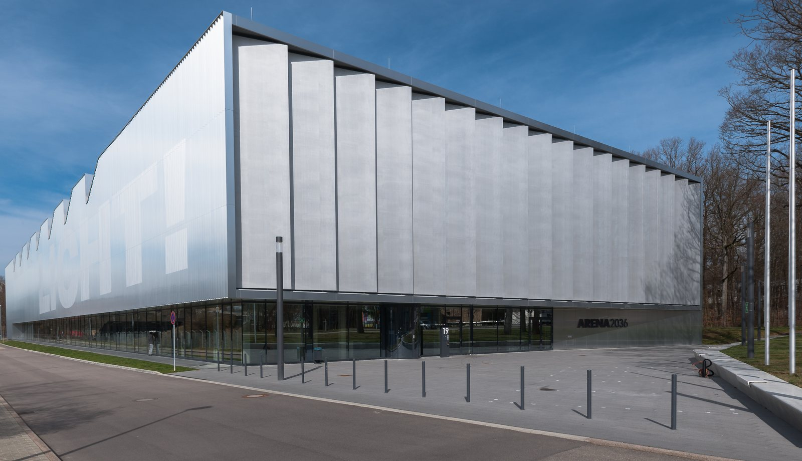

I / INPUT
何を持ち込んでいるか。
活動の出発点となる資源と課題を分けて整理します。「自社」は、その場・制度を運営する組織を指します。
- 行政・公共機関
研究工場の建設はEUのERDF資金を州経由で投入。行政職員が各実験の実施・採用を担う体制は公開資料では未確認。
公開資料で確認出典 1- スタートアップ
- 市民・利用者・現場
一般市民の常設参加や、利用者代表が案件選定に関与する仕組みは公開資料では未確認。主に産業の研究開発を対象とする。
公開資料では未確認
II / VALUE CREATION FUNCTIONS
資源を、どう価値へ変えるか。
以下は既存の8ステップへの編集上の対応づけです。各施設の公式な工程名や、全工程を自前で担うことを意味しません。
III / OUTPUT
直接、何が生まれたか。
試作品、データ、契約、標準、育成した人材など、活動から直接生まれたもの。
IV / OUTCOME
その結果、何が変わったか。
実際の利用、行動、業務、事業、地域の変化。報告された変化と、施設の活動に帰属できる効果は区別します。
規格・共通データを本番で利用する企業数、接続費の低減、量産移管の増加は、今回確認した公開資料では未確認。共通参照物の整備は、上記のアウトプットとして扱う。
PROJECT IN FOCUS / 具体的な事例
VWS4LS：AAS4WH Marketplaceによる部品カタログ実証
確認できた段階：実証 調査確認日 2026-09-28
誰の課題を、どう扱ったか
ワイヤーハーネス部品を共通のデジタル形式で記述し、異なるメーカーの情報をひとつの利用場面で扱う実証。参加企業の参照データと他の供給者のリポジトリを接続した。
生まれたもの
製品データの作成・管理ルール、参照例、メーカー横断カタログのデモを作成した。
確認できた変化
本番調達への継続導入、取引額、調達期間短縮、供給者の売上増加は公開資料では未確認。
評価の限界：商用の販売・保守責任者、課金条件、購買部門による採用判断と長期運用実績を確認する必要がある。
DESIGN BACKWARDS FROM IMPLEMENTATION
社会実装から逆算して、
何を先に整えているか。
実証の先にある導入・運用・継続から、この事例の設計を読み解きます。仕組みの存在と、全案件で成果が出たことは別に扱います。
調達と生産の出口から情報を決める
「データを集める」を目標にせず、企業が部品を選び、設備で扱える状態から逆算する。商品情報の参照例と実際のカタログ試験をセットにすると、データ項目の不足を導入前に発見できる。
秘密を守れる参加条件を先につくる
役割・属性に応じたアクセス制御を検討し、共同利用に必要な情報と競争力の源泉を分ける。知財・機密を議論の後回しにしないことが、企業を越える実装の参加条件になる。
既存の業務形式を捨てさせない
DIN 72036は既存のKBL・VEC形式を活用する。新方式への全面移行だけを求めず、企業の既存設備・データとの接点を残すことが、移行負担を抑える設計として読み取れる。
MORE DETAIL / 運営・根拠・応用
運営の全体像と、学びを深める資料。
費用負担、公表値、応用条件、写真・動画、原典を続けて確認できます。
01どう動かしているのか。
研究キャンパスの会員は、最初の相談で技術的関心と案件をすり合わせ、内容調整、正式申請、理事会決定、オンボーディングを経て参加する。研究調整チームが案件ごとに実験区画を割り当て、既存設備と新規案件の接続を調整する。ARENA2036-Xは会員企業が資金を出す共同ネットワークとして、Asset Administration Shellとデータスペースを組み合わせ、技術オンボーディングと企業間PoCを支援する。2026年のProject Fairでは、計算資源と企業間データ基盤を使うKI-D@ARENA2036-Xや、共通サンドボックスでデジタルツインを試すIndustrial Metaverseを紹介。企業が同居することに加え、資産記述、権限、接続試験、調整事務局を共同資産にしている。
- 会員の技術課題をすり合わせ
- 理事会承認・接続準備
- 共通データ環境でPoC
- 実機・実験区画で検証
- 標準・部品・共同案件へ展開
02誰が負担し、誰が担うか。
連邦研究支援と会員・事業別負担。研究工場建設はEU地域開発基金を州経由で半分、残りをシュトゥットガルト大学が負担。ARENA2036-Xは参加会員企業が資金負担。
制度やプログラムの財源と、各参加企業・地域に発生する費用は同じではありません。公開範囲を超える案件別予算・契約条件は未確認です。
03確認できたこと。
会員参加は初回相談→内容調整→正式申請→理事会判断→オンボーディングの手順を公開。
読み取れる範囲：会費額、全申請の採択率、平均参加準備期間は同ページで未確認。
原典で確かめる ↗ 出典の説明 ↓ARENA2036-Xは会員企業が資金負担し、AASとデータスペースの共通試験環境を会員に提供。
読み取れる範囲：試験環境の存在と説明。商用利用量・費用回収・生産性向上の独立評価ではない。
原典で確かめる ↗ 出典の説明 ↓04日本で活かすなら。
本調査の提案：国内の製造・モビリティの共創では、全データを一か所へ集める前に、何を同じ意味・権限・形式で交換するかを決める。複数企業の機器状態や保守記録を小さなサンドボックスで接続し、データ所有者が範囲を限定できるようにする。事務局にはイベント運営だけでなく、技術調整、契約・知財、費用分担を扱える担当を置く。地域中小企業にとっては設備投資を減らす利点があるが、標準対応工数が重すぎると参加できない。共通部品と導入支援を用意し、企業規模ごとの負担と便益を確認する。
05そのまま真似できないこと。
会員制の共同研究は一般市民の参加型リビングラボと同じではない。産業の効率だけで公共価値を主張せず、安全、労働、技能移行、環境負荷を別途評価する必要がある。データ主権の技術があっても機密・知財・取引上の力関係は残る。公開資料では全案件の正式導入率やデータスペースの利用量、企業別の投資回収は確認できず、会員数や展示数を成果へ置き換えられない。
06次に、何を確かめるか。
提案・未実施：調整事務局が3社の保守データを12週間、共通定義と権限付きで接続する。2社目・3社目の接続工数、再利用率、権限設定の誤り、停止時の復旧時間を計測。個別接続より工数が減らない場合は標準範囲を縮め、機密分離を確認できなければ外部展開を停止する。
07現場を、写真と動画で。

ARENA2036-pjt · 2018-03-30
PHOTO: Pjt56 · 掲載元 ↗ · CC BY-SA 4.0 ↗ · 縮小・表示枠に合わせた切り抜き。色変更なし。
冒頭写真：ARENA2036の実験フロア。会員企業の作業・プロジェクト・デモ設備が集まる。
ARENA2036研究工場 360°バーチャルツアー
ARENA2036（公式研究工場ページの埋め込み。通常動画ではなく360°体験）
公式サイトで見る ↗08原典を読む。
Inclusion of the Asset Administration Shell in the product catalog ↗
KOSTAL・KOMAX・COROFLEXの参照AAS、メーカー横断カタログのデモ